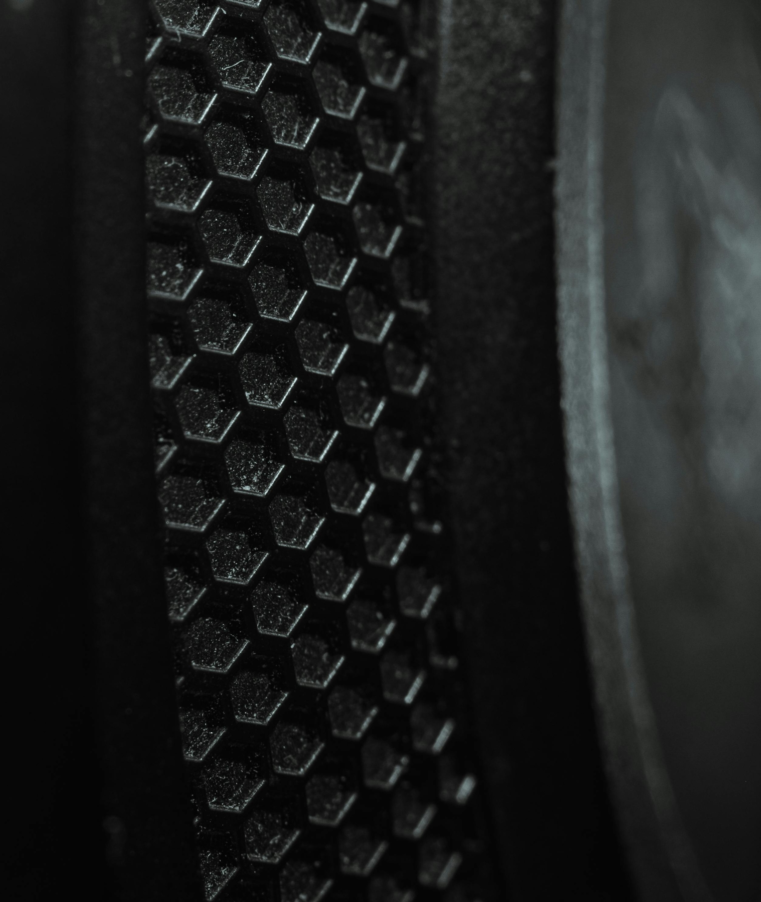

Tjenester
Det vi leverer
Si hva slags kveld det er, så setter vi sammen teknikken: antall høyttalere, lysrigg, riggetid og hva som er inkludert står alltid i tilbudet.

DJ
DJ til russearrangementer, bryllup, julebord og fest. Musikken planlegges med deg på forhånd, og ønskelåter kan spilles inn underveis.
- Egen DJ med miksere og mikrofoner
- Musikkprofil avtales på forhånd
- Mikrofon til taler og allsang

Lyd og lys
Lydanlegget tilpasses arrangementet – lokalet, antall gjester og hva kvelden skal inneholde. Lyset rigges for rommet, fra enkle festlys til full scenerigg.
Der oppdraget krever mer, henter vi inn PA og lys gjennom samarbeidspartneren vår Eprod i Mo i Rana.
- Lydanlegg dimensjonert for lokalet
- Lysrigg programmert for kvelden
- Rigg, drift og nedrigg inkludert

Nytt
Showlaser klasse 4
Showlaser gir et lysbilde vanlige lamper ikke kommer i nærheten av. Laserne er registrert hos Direktoratet for strålevern og atomsikkerhet (DSA) og opereres alltid av oss.
Laser krever planlegging: vi setter sikkerhetssoner i lokalet, og vi har egen strålevernkoordinator.

Effekter
Røyk og haze gjør lyset synlig i rommet og løfter hele lysbildet. Vi tilpasser effektene til lokalet og avklarer alltid bruk av røyk med utleier på forhånd.
- Røykmaskiner og haze
- Effekter tilpasset lokalets regler
Usikker på hva kvelden trenger?
Send en melding med dato og sted, så foreslår vi et oppsett og setter opp et tilbud.
Send forespørsel